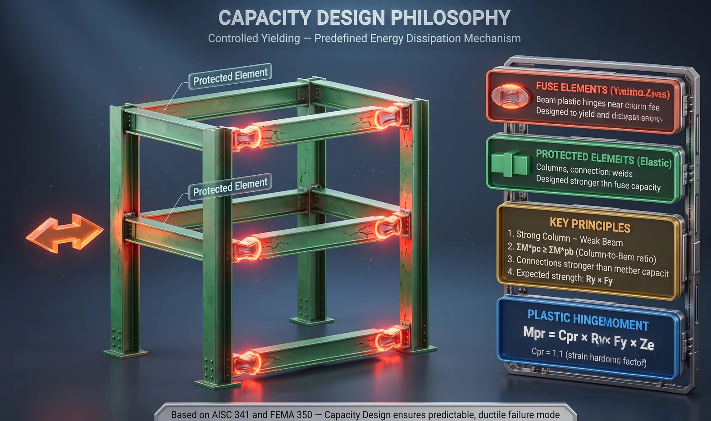
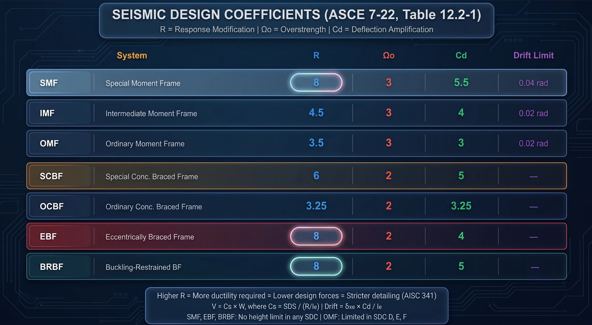
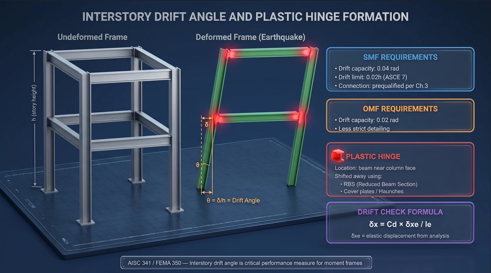

Seismic Design for Steel Structures — Part 1: Theoretical Foundations & Design Philosophy
Structural Notes · No. 11·15 Aug 2026·17 min read
1. Lessons from Northridge 1994
On 17 January 1994 the Northridge earthquake (M 6.7) in Los Angeles shattered the profession's confidence in welded steel moment frames (WSMF).
Before Northridge
Welded steel moment frames were regarded as the gold standard for seismic resistance.
Beam-to-column connections used CJP welds at the beam flanges.
Engineers believed the system had excellent ductile deformation capacity.
After Northridge — the shock
Hundreds of beam-to-column connections suffered brittle fracture at the welds.
Cracks initiated at the CJP weld of the bottom flange and propagated into the column flange.
Many structures were damaged with no sign of ductile deformation — the very thing the design relied on.
#
Root cause
Explanation
1
Low-toughness weld metal
E70T-4 electrodes had very low Charpy V-Notch toughness
2
Weld backing bars
Created root defects that became crack initiation points
3
Stress concentration
Plastic deformation occurred right at the column face — the peak-stress location
4
Actual strength above design
A36 steel had Fy well above nominal, raising the force delivered into the connection
5
Poor quality control
Weld inspection failed to catch latent defects
Why this matters in low-seismicity regions
Vietnam sits in a low to moderate seismic zone under TCVN 9386.
Yet many industrial projects — plants, pipe racks — are designed to US codes (AISC/ASCE).
Understanding this lets you pick a system that is appropriate and economical, avoiding both over-design and unsafe detailing.
2. The capacity design philosophy

Figure 1. Capacity design — separating the yielding elements from the protected ones.
Group
Role
Examples
Requirement
Fuse
Yields and dissipates energy
Beam plastic hinges, EBF link beams, CBF braces
Large, stable inelastic deformation
Protected
Stays elastic
Columns, connections, welds, gusset plates
Strength above the ultimate capacity of the fuse
Strong column — weak beam
This is the single most important rule in seismic frame design. Plastic hinges must form in the beams first. If the columns yield first you get a soft-storey collapse mechanism — total failure.
ΣM*pc ≥ ΣM*pb
ΣM*pc = sum of COLUMN moment capacities at the joint (allowing for axial load)
ΣM*pb = sum of BEAM plastic-hinge moments (using expected strength)
Expected strength and the plastic hinge moment
Real steel always yields above its nominal Fy. When designing a protected element you must use the expected strength of the fuse — otherwise the protected element is not genuinely stronger than the fuse.
Fye = Ry × Fy (expected yield strength)
Fue = Rt × Fu (expected tensile strength)
Plastic hinge moment:
Mpr = Cpr × Ry × Fy × Ze
Cpr = strain-hardening factor, AISC recommends 1.1
Ze = plastic section modulus at the hinge location
3. The seven seismic systems and their design coefficients

Figure 2. Design coefficients compared across the seismic force-resisting systems.
System
R
Ω₀
Cd
Fuse element
SMF — special moment frame
8
3
5.5
Beam plastic hinge
IMF — intermediate moment frame
4.5
3
4
Beam plastic hinge
OMF — ordinary moment frame
3.5
3
3
Beam plastic hinge
SCBF — special concentrically braced
6
2
5
Braces in tension/compression
OCBF — ordinary concentrically braced
3.25
2
3.25
Braces
EBF — eccentrically braced
8
2
4
Link beam
BRBF — buckling-restrained braced
8
2
5
BRB core
What the three coefficients mean
R — response modification: lets you reduce the design force in exchange for ductility. A higher R means smaller design forces but far stricter detailing. It is a trade, not a gift.
Ω₀ — overstrength: amplifies the design force for particular elements (columns, connections, collectors) so they do not fail before the fuse reaches its ultimate capacity.
Cd — deflection amplification: elastic analysis gives δxe; the real drift is δx = Cd × δxe / Ie. This is what the drift check uses.
Moment frames — three tiers
SMF
IMF
OMF
Drift capacity
0.04 rad
0.02 rad
0.02 rad
Strong column – weak beam
Required
Required
Not required
b/t limits
λhd
λmd
λp
Connections
Prequalified (AISC 358)
Tested / qualified
Flexible
Height limit
None
Yes
Tight
Suitable SDC
D, E, F
C, D
A, B, C
Braced frames — concentric, eccentric and BRBF
CBF (concentric): brace axes pass through the joint; energy is dissipated by tension yielding and compression buckling. K-braces are prohibited in both SCBF and OCBF.
EBF (eccentric): the brace axis deliberately misses the joint, creating a short link beam. The link yields while the brace and outer beam stay elastic. R = 8 like an SMF but far stiffer.
BRBF: the brace is encased so it cannot buckle in compression — it yields symmetrically both ways, dissipating energy very efficiently. Detailing is simpler than SCBF.
Link type (EBF)
Length
Mechanism
Rotation capacity
Short link (shear)
e ≤ 1.6·Mp/Vp
Shear yielding
γp = 0.08 rad
Intermediate
1.6 < e/(Mp/Vp) < 2.6
Combined
Interpolate
Long link (flexural)
e ≥ 2.6·Mp/Vp
Flexural yielding
γp = 0.02 rad
4. Determining the design seismic force
The six ASCE 7 steps
1. Read the seismic maps → Ss (0.2s period) and S1 (1.0s period)
2. Site coefficients for Site Class A→F:
SMS = Fa × Ss SM1 = Fv × S1
3. Design spectral accelerations:
SDS = 2/3 × SMS SD1 = 2/3 × SM1
4. Seismic Design Category (SDC) from SDS, SD1 and Risk Category
5. Seismic response coefficient:
Cs = SDS / (R / Ie)
not more than SD1 / [ T × (R / Ie) ] when T ≤ TL
not less than 0.044 × SDS × Ie ≥ 0.01
6. Base shear:
V = Cs × W W = total effective seismic weight
ASCE 7 versus TCVN 9386
Feature
ASCE 7 (US)
TCVN 9386 / EC8
Primary parameter
Ss, S1 (spectral acceleration)
agR (peak ground acceleration)
Design spectrum
From SDS, SD1
Elastic spectrum × 1/q
Force reduction
R
q (behaviour factor)
Return period
2,475 years (MCE) then ×2/3
475 years
Zoning
USGS maps
Province-level maps
The Vietnamese context
agR ranges from 0.0432g in the quietest zones to 0.1086g in Điện Biên and Lai Châu.
Most of the country sits below agR = 0.08g — low to very low seismicity.
Foreign-invested projects usually demand US codes, so a PGA-to-ASCE conversion is needed.
Rough conversion: SDS ≈ 2/3 × Fa × (2.5 × agR)
agR = 0.08g, Site Class D → SDS ≈ 0.21g → SDC B
OMF or OCBF is acceptable
agR > 0.10g, Site Class D → SDS ≈ 0.27g → SDC C
IMF or SCBF and above required
The drift check
δx = Cd × δxe / Ie
Limits by Risk Category:
I, II → 0.020 × hsx
III → 0.015 × hsx
IV → 0.010 × hsx (hsx = storey height)

Figure 3. Drift angle and the formation of the plastic hinge.
5. Material requirements — why A36 is the wrong steel
Mass-produced steel typically yields 20–50% above its nominal value. A36 is nominally Fy = 248 MPa but routinely tests at 300–380 MPa.
Steel grade
Fy (MPa)
Ry
Rt
ASTM A36
248
1.5
1.2
ASTM A572 Gr.50
345
1.1
1.1
ASTM A992
345
1.1
1.1
ASTM A500 Gr.B (HSS)
317
1.4
1.3
ASTM A500 Gr.C (HSS)
345
1.3
1.2
ASTM A913 Gr.50/S75
345
1.1
1.1
When to use Ry × Fy and when to use nominal Fy
Use expected strength Ry × Fy
Use nominal Fy
Computing the plastic hinge moment Mpr
Designing the fuse element itself
Designing connections that receive fuse forces
Ordinary capacity-ratio checks
The strong column – weak beam check
—
Designing CBF gusset plates
—
CVN toughness
Demand-critical welds must achieve CVN ≥ 27J at −29°C.
Use high-toughness filler metal — low-toughness electrodes were what caused Northridge.
Remove the backing bar after CJP welding at the bottom beam flange.
6. Width-to-thickness limits
Under large inelastic strains the flange or web can buckle locally. Early buckling means losing capacity before any energy is absorbed — precisely what seismic design depends on. Hence seismic elements need tighter b/t ratios than ordinary design.
References: FEMA 350 · AISC 341-22 · ASCE 7-22 · AISC 358-22 · TCVN 9386:2012. Part of the “Industrial structural design guide” series by Roberto Structural. The content is technical guidance only; the engineer remains responsible for verifying and adapting it to each project and the governing code.